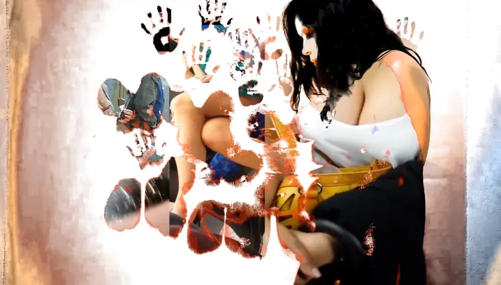
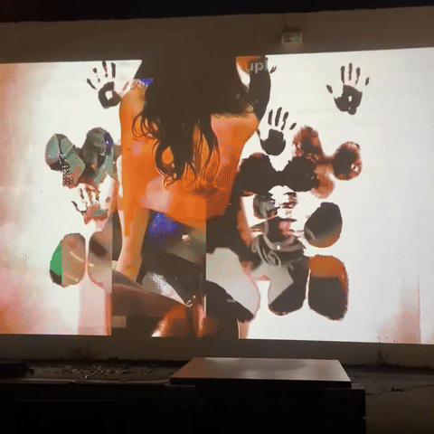

Cyborgrrrls Encuentro de Arte Tecnofeminista
Video Art, Net-Art Website, Video-performance
2018
The video focuses on videos where men recorded women without their consent and posted it to porn sites such as xvideos. It is a digital collage of a search on xvideos about women walking on the street, "provocative", non-"provocative", and being recorded.
I am naked, painted in green, using the vulnerability of my body to talk about the vulnerability of women while wearing daily clothes and being recorded without consent.
The video piece highlights the disturbing issue of men secretly recording women without their consent and sharing the footage on pornographic websites such as xvideos. Through a digital collage of xvideos search results featuring women walking on the streets, the video exposes the gendered gaze and the objectification of women's bodies.
In the video, I appear in everyday clothes to draw a contrast with men who record women in public spaces, highlighting the unequal power dynamics at play.